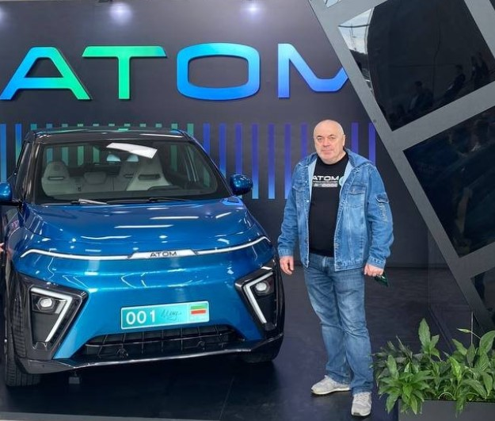
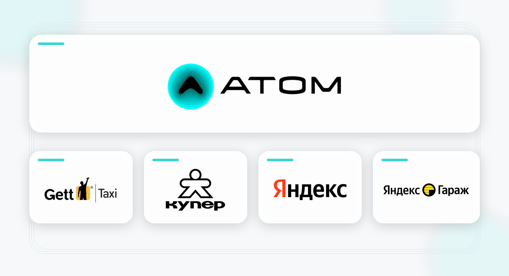
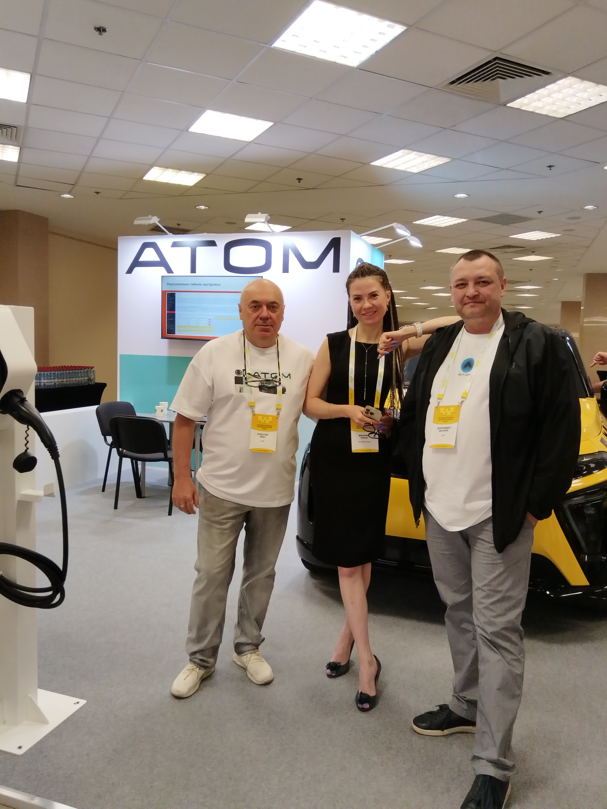
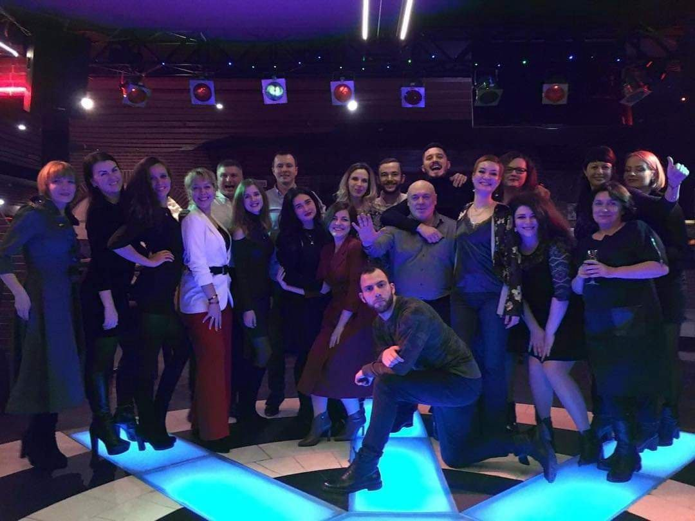
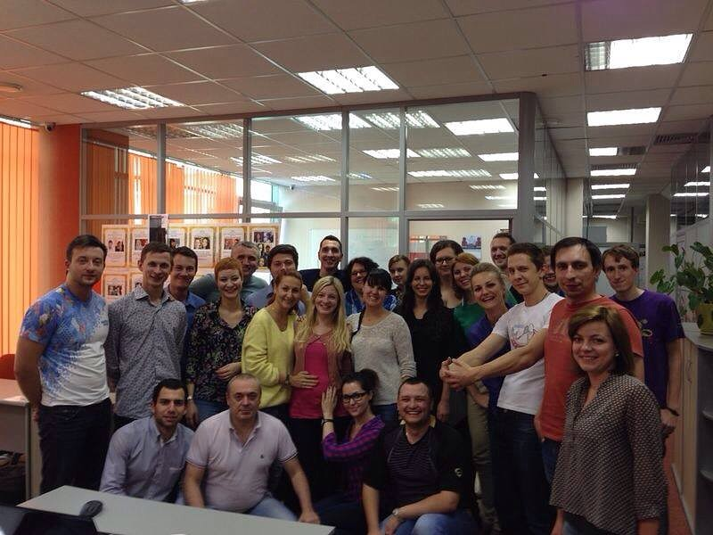
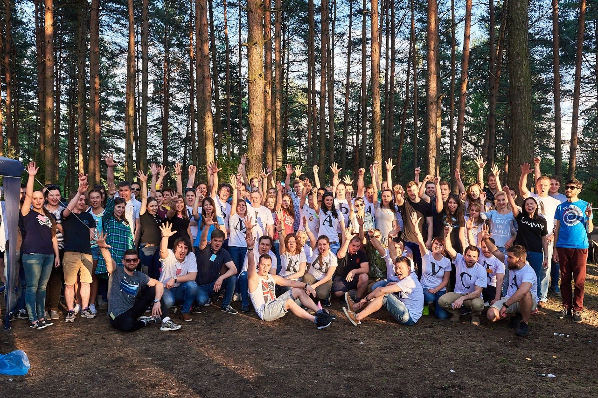
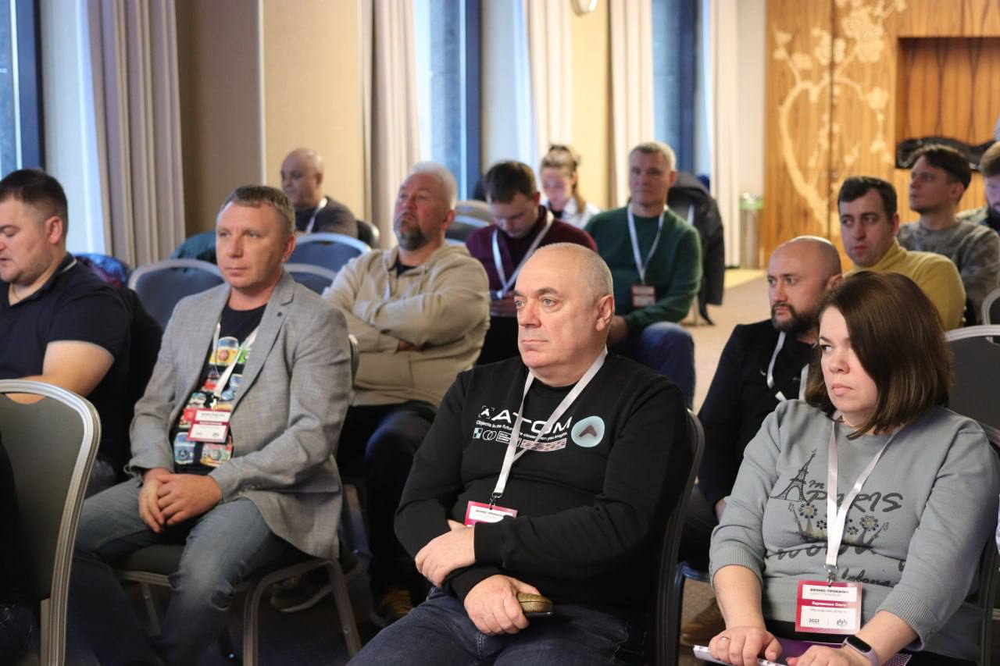

Развитие B2B-продаж
Сегментация рынка, клиентская база, встречи, переговоры, пилоты, LOI, договоры и развитие партнерской сети.
Эксперт по рынку такси России · B2B · Партнёрства
От стратегии выхода на рынок до партнёрств с таксопарками.
С 2012 года развиваю транспортные сервисы, партнёрские сети и B2B-продажи. Помогаю компаниям понимать потребности таксопарков, находить точки роста и выстраивать управляемые продажи. Опыт Gett, GetCar, Яндекс и АТОМ.

Отраслевая экспертиза
Иван Корытник — специалист по работе с таксопарками, развитию транспортных партнёрств и B2B-продажам. Опыт работы в такси, каршеринге, доставке и автомобильной отрасли с 2012 года. В Gett координировал работу более 700 транспортных компаний, в GetCar привлекал к сотрудничеству 530 таксопарков Москвы.
Могу помочь производителю автомобилей, шин и запчастей, лизинговой компании, IT-сервису или поставщику услуг оценить рынок, сформировать предложение для таксопарков, определить целевые сегменты и организовать развитие партнёрской сети. Доступность конкретных контактов и знакомств обсуждается отдельно с учётом согласия сторон.
Подробнее об экспертизе, формате сотрудничества и ответах на частые вопросы →

Обо мне
Руководитель B2B-направления с опытом развития партнерских сетей, транспортных сервисов и коммерческой аналитики. Работал с B2B-клиентами, автопарками, таксопарками, перевозчиками, водителями и цифровыми платформами в АТОМ, Яндекс.Гараж, Яндекс.Доставка, GetCar, Gett и Купер.
Умею быстро собрать рынок, выйти на лиц, принимающих решения, выстроить воронку, запустить пилот, заключить LOI или договор и сделать продажи управляемыми через CRM, KPI, план-факт и BI-аналитику.
Направления работы
Сегментация рынка, клиентская база, встречи, переговоры, пилоты, LOI, договоры и развитие партнерской сети.
Лид, контакт с ЛПР, потребность, коммерческое предложение, пилот, договор, поставка и повторные продажи.
CRM-статусы, конверсии, причины отказов, прогноз, план-факт, KPI и регулярная управленческая отчетность.
Экспертиза
Развитие каналов продаж, переговоры с ЛПР, пилоты, LOI, договоры, партнерские программы и масштабирование сети.
Глубокое знание таксопарков, автопарков, перевозчиков, водителей, курьерских служб и цифровых платформ.
CRM-воронка, KPI, план-факт, прогноз продаж, BI-дашборды, PostgreSQL, DataLens, Tableau, Excel, ELMA и amoCRM.
Карьера
Развиваю федеральную сеть партнеров для вывода нового автомобильного бренда на рынок РФ. Отвечаю за поиск, сегментацию, встречи, переговоры, LOI, договоры и контроль pipeline.
Сформировал партнерскую базу 1200+ компаний, заключил LOI с 60 компаниями с потенциалом 52 000 автомобилей, подписал контракты со 187 партнерами на 5 500 автомобилей. Настроил CRM-воронку, KPI, план-факт, прогноз и BI-аналитику на базе PostgreSQL и DataLens.
Синхронизировал бизнес, партнеров и операционные команды для внедрения изменений. Проводил аудит процессов и качества сервиса, внедрял стандарты работы партнеров, анализировал данные в PostgreSQL и автоматизировал отчетность в Tableau и DataLens.
Управлял развитием партнерской сети и операционными метриками в Москве и Московской области. Подключил 360+ новых партнеров и активировал 50 000+ исполнителей. Координировал KPI, SLA, качество исполнения, отмены и время подачи.
Запустил с нуля цифровой сервис для транспортного рынка и партнерской сети. Организовал работу с 8000+ партнерами, включая таксопарки, автопарки и курьерские службы. Координировал продукт, аналитику и партнерскую сеть, работал с GMV, CR, LTV и CAC.
Выстроил операционную деятельность цифрового сервиса для транспортного рынка с нуля. Руководил командой из 25 человек, включая разработчиков. Привлек к работе 530 таксопарков Москвы и 36 000 водителей.
Создал и организовал работу транспортного департамента с нуля. Координировал 700+ транспортных компаний с парком 50 000+ автомобилей. Разработал и внедрил регламенты работы и KPI для транспортных партнеров.
Лично обучил 2300+ водителей стандартам качества и подключил 400+ новых партнеров.
Результаты
Базовое образование
1991 год. Специальность: АСУ. Квалификация: инженер-кибернетик.
Образование дало системное мышление, дисциплину, техническую базу и способность работать со сложными организационными задачами.
Подробнее об институте
Галерея

ATOM 2023

ATOM 2024

ATOM 2025

ATOM 2025
ATOM Auto

GETT 2019

Gett 2014

Gett 2017

Прокачка таксопарков
Связаться
Telegram @Iv_kory
Email rezkor@mail.ru
Телефон +7 965 181-36-49
Локация Москва, м. Полежаевская
Командировки Да